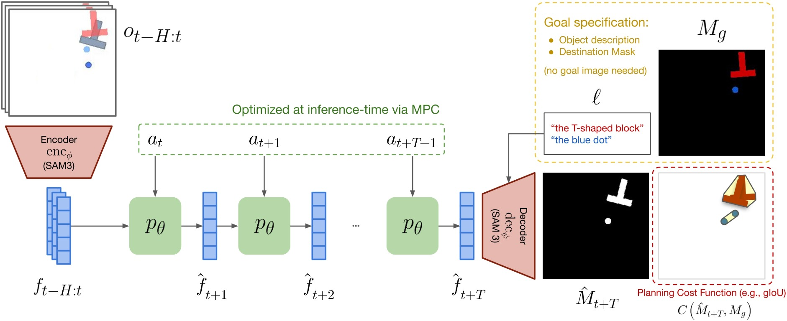
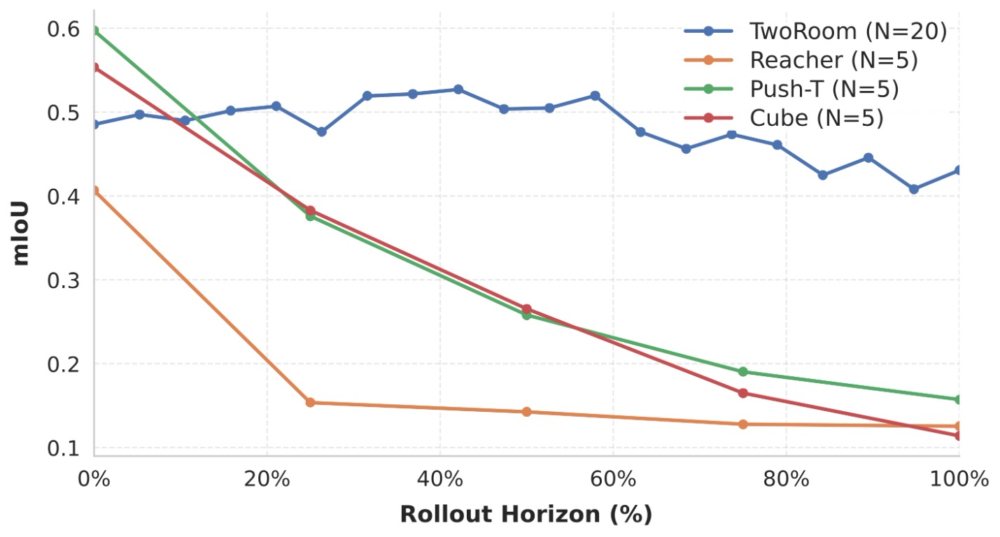

Overview
Joint Embedding Predictive Architectures (JEPAs) (LeCun, 2022) typically plan through Model Predictive Control (MPC) by unrolling future states and minimizing the latent feature distance to an encoded goal image. However, requiring a pixel-perfect photograph of the finished task in advance may be impractical in real-world scenarios.
Instead of matching full-scene image representations, SAM-WM performs MPC directly against language-queried destination masks. Built on top of a frozen Segment Anything 3 (SAM3) (Carion et al., 2026) backbone, it forecasts future visual dynamics, decodes the target object's mask along candidate action sequences, and guides trajectory optimization via a distance-aware geometric cost (gIoU). Across four diverse navigation and manipulation benchmarks, SAM-WM substantially outperforms naive mask-adapted baselines and rivals image-conditioned world models without ever observing a target photograph.
Method
SAM-WM reformulates visual control around semantic geometry: instead of full goal photographs, tasks are defined using a simple natural-language object description (e.g., "the blue dot") and a 2D destination mask. The framework leverages a frozen Segment Anything 3 (SAM3) backbone paired with an action-conditioned dynamics predictor, which is trained purely offline on unannotated environment episodes to forecast future SAM3 visual features from candidate actions without requiring manual labels or decoder evaluations during training.
At each decision step, online trajectory optimization proceeds in a receding-horizon Model Predictive Control (MPC) loop via the Cross-Entropy Method (CEM):
- Sample Actions: CEM generates a set of candidate action sequences across the planning horizon.
- Rollout SAM3 Features: The transition model takes the sampled actions and autoregressively forecasts the future dense SAM3 feature maps step by step.
- Decode Target Mask: Guided by the text prompt, the frozen SAM3 mask decoder extracts the target object's binary mask directly from the terminal predicted features.
- Score with Geometric Cost: The candidate trajectory is scored by computing the Generalized IoU (gIoU) distance between the decoded mask and the destination mask.
The optimizer refines the sampled distribution over multiple iterations, executes the first action of the best-performing trajectory, and repeats the process from the newly observed visual state.

Results
Conventional JEPA world models, including DINO-WM (Zhou et al., 2025), LeWM (Maes et al., 2026), and PLDM (Sobal et al., 2025), plan in latent space by matching predicted features to an encoded goal image. In real-world robotic scenarios, however, having access to a pixel-perfect target image in advance is often unfeasible, whereas a user can far more conveniently sketch a destination mask and supply a textual description of the object. SAM-WM instead predicts dense SAM3 features and decodes the language-queried object mask before optimizing geometric alignment with a binary destination mask. To establish an empirical upper bound for zero-order mask optimization, an Oracle Planner evaluates candidate actions directly within the environment simulator paired with ground-truth segmentations. Finally, to probe whether existing latent world models can handle non-image targets without dedicated decoders, a mask-based DINO-WM baseline feeds binary destination canvases directly into a frozen DINOv2 backbone for latent-space matching (Oquab et al., 2024).
| Model | Goal | Two-Room* | Reacher | Push-T | Cube |
|---|---|---|---|---|---|
| Random | — | 0 ± 0 | 10 ± 5 | 2 ± 2 | 48 ± 3 |
| Oracle | Masks | 74 ± 2 | 62 ± 1 | 84 ± 2 | 66 ± 2 |
| DINO-WM | Image | 63 ± 1 ↓ | 79 ± 6 | 74 ± 4 ↓ | 86 ± 5 |
| LeWM | Image | 16 ± 2 ↓ | 86 ± 5 | 96 ± 3 | 74 ± 3 |
| PLDM | Image | 51 ± 2 ↓ | 78 ± 6 | 78 ± 5 ↓ | 65 ± 3 |
| DINO-WM | Masks | 45 ± 2 | 22 ± 5 | 19 ± 1 | 42 ± 2 |
| SAM-WM (ours) | Masks | 74 ± 2 | 61 ± 2 | 83 ± 2 | 64 ± 2 |
*Evaluated under an extended horizon (100-step offset, 150-step budget) to prevent short-horizon saturation.
Red down arrows (↓) indicate image-based baselines that perform equal to or worse than SAM-WM.
Across all benchmarks, SAM-WM decisively outperforms the mask-adapted DINO-WM baseline—surpassing it by up to 64 percentage points on complex manipulation tasks like Push-T (83% vs. 19%). Remarkably, SAM-WM closes the performance gap to the Oracle Planner to within just 1–2 percentage points across the entire evaluation suite. This near-parity confirms that dense SAM3 representations provide an effective substrate both for modeling multi-step forward dynamics and for decoding high-fidelity object masks during closed-loop control. Moreover, in environments featuring long-range horizons or distant target configurations—such as Two-Room and Push-T—SAM-WM systematically exceeds several full-image JEPA models (e.g., outperforming LeWM, PLDM, and DINO-WM on Two-Room), demonstrating that distance-aware geometric guidance over destination masks can in some cases drive trajectory optimization more reliably than latent visual matching, even when competing approaches exploit complete RGB goal scenes.
Cost Function
Standard mask overlap objectives provide weak or no gradient when predicted and target masks do not intersect. Pixel MSE is also poorly suited to spatial alignment because the large background area dominates the error.
Here, \(D(A, B)\) represents the convex hull enclosing the union of the two masks. The additional convex-hull term penalizes unoccupied space between disjoint masks, providing a smooth, distance-aware optimization signal.
| Cost function | Two-Room | Reacher | Push-T | Cube |
|---|---|---|---|---|
| MSE | 7 ± 1 | 32 ± 4 | 12 ± 2 | 52 ± 1 |
| IoU | 22 ± 0 | 68 ± 0 | 52 ± 0 | 63 ± 2 |
| gIoU | 74 ± 2 | 62 ± 1 | 84 ± 2 | 66 ± 2 |
gIoU is the most versatile objective across long-horizon navigation and contact-rich manipulation. While standard IoU is sharper in Reacher—where the arm remains close to the workspace, the target configuration is consistently within the MPC planning horizon, and exact thin-link overlap is essential—gIoU remains decisive in domains where candidate trajectories initially have zero overlap with the target.
Mask Predictions
The visualizations above show destination masks decoded directly from autoregressive SAM-WM latent rollouts across all four benchmark environments. Starting from the initial observation, the transition model predicts future dense SAM3 feature maps conditioned on executed actions, from which the promptable SAM3 decoder extracts the semantic object masks.

To quantify prediction fidelity and compounding drift, we evaluate the mean Intersection over Union (mIoU) between predicted rollout masks and ground-truth environment segmentations across increasing time horizons. In Two-Room, where dynamics are smooth and contact-free, mask segmentation remains notably consistent across the rollout. In contact-rich environments like Push-T and OGBench-Cube, or fast articulated settings like Reacher, cumulative autoregressive errors lead to gradual degradation over long sequences. Crucially, while the mIoU across the local MPC planning horizon is not perfect, it remains entirely sufficient to guide trajectory optimization effectively. This is evidenced by the minimal performance gap between SAM-WM and the idealized Oracle Planner—which operates with an effective mIoU of 1 across the entire rollout horizon—confirming that local geometric trends matter far more than pixel-perfect long-range predictions.
DINOv2 vs. SAM3
To understand how segmentation representations behave inside world models, we compare SAM3 directly against DINOv2 (Oquab et al., 2024) under the DINO-WM framework (Zhou et al., 2025) across both latent image matching and mask-guided planning.
| Backbone | Goal | Two-Room* | Reacher | Push-T | Cube |
|---|---|---|---|---|---|
| DINOv2 | Image | 63 ± 1 | 79 ± 6 | 74 ± 4 | 86 ± 5 |
| SAM3 | Image | 34 ± 2 | 69 ± 3 | 66 ± 3 | 72 ± 3 |
| SAM3 (SAM-WM) | Masks | 74 ± 2 | 61 ± 2 | 83 ± 2 | 64 ± 2 |
- SAM3 representations natively support world modeling: Although a general self-supervised backbone like DINOv2 yields stronger features for latent image matching (achieving ~10% higher success rates on full image goals), SAM3 still preserves the rich spatial dynamics needed to train accurate, action-conditioned transition predictors.
- Geometric mask planning can be advantageous in specific domains: When SAM3 features are paired with on-the-fly mask decoding and a geometric gIoU cost, the planner concentrates on task-relevant geometry rather than full scene appearance. In environments like Push-T or Two-Room with extended goal horizons, this approach can even exceed image-goal DINOv2 models (+9% and +11%, respectively), demonstrating that distance-aware geometric signals can be preferable to latent feature matching when navigating toward distant targets.
References
- • Carion, Nicolas, Laura Gustafson, Yuan-Ting Hu, Shoubhik Debnath, Ronghang Hu, Didac Suris, et al. SAM 3: Segment Anything with Concepts. In ICLR, 2026.
- • LeCun, Yann. A Path Towards Autonomous Machine Intelligence. OpenReview, 2022.
- • Maes, Lucas, Quentin Le Lidec, Damien Scieur, Yann LeCun, and Randall Balestriero. LeWorldModel: Stable End-to-End Joint-Embedding Predictive Architecture from Pixels. arXiv preprint arXiv:2603.19312, 2026.
- • Oquab, Maxime, Timothée Darcet, Théo Moutakanni, Huy V. Vo, Marc Szafraniec, Vasil Khalidov, Pierre Fernandez, Daniel Haziza, Francisco Massa, Alaaeldin El-Nouby, et al. DINOv2: Learning Robust Visual Features without Supervision. TMLR, 2024.
- • Sobal, Vlad, Wancong Zhang, Kyunghyun Cho, Randall Balestriero, Tim G. J. Rudner, and Yann LeCun. Learning from Reward-Free Offline Data: A Case for Planning with Latent Dynamics Models. In NeurIPS, 2025.
- • Zhou, Gaoyue, Hengkai Pan, Yann LeCun, and Lerrel Pinto. DINO-WM: World Models on Pre-trained Visual Features enable Zero-shot Planning. In ICML, 2025.
BibTeX
@article{bianchi2026samwm,
title = {World Models on Segmentation Features enable Mask-Guided Planning},
author = {Bianchi, Lorenzo and Barsellotti, Luca and Falchi, Fabrizio and Messina, Nicola and Carrara, Fabio},
journal = {arXiv preprint},
year = {2026}
}